"There’s something about the air here—I wouldn’t call it invigorating, but it’s peaceful and calming. Were I a less-traveled woman, I might think Meratt quite the paradise. The stuffy senators and grand dukes of Oppara are nowhere to be found here, politics seem practically nonexistent, and the sleepy hamlets are filled with kind folk, even if most still try to claim a connection to one of Taldor’s great families. I see through it all, though. This county is lovely and pastoral, but its greatness is long gone. Taxes have reduced its nobles to a threadbare facsimile of extravagance, and if you look closely, its well-manicured estates are plagued with leaky roofs and peeling paint. It’s nice to get out of the city. But if you’re looking for the height of opulence at a slower pace, the county of Meratt isn’t the place for you." — Excerpt from the travel journal of Countess Carlotta Plenst of Oppara
Loyalties After the Exaltation Massacre
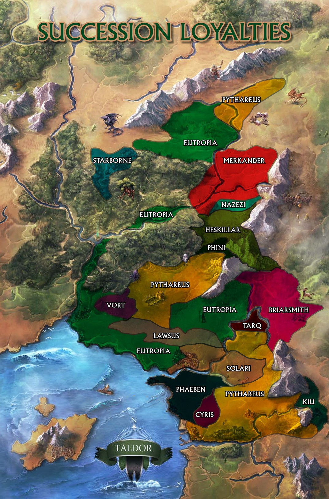
Loyalties After Securing Stachy's
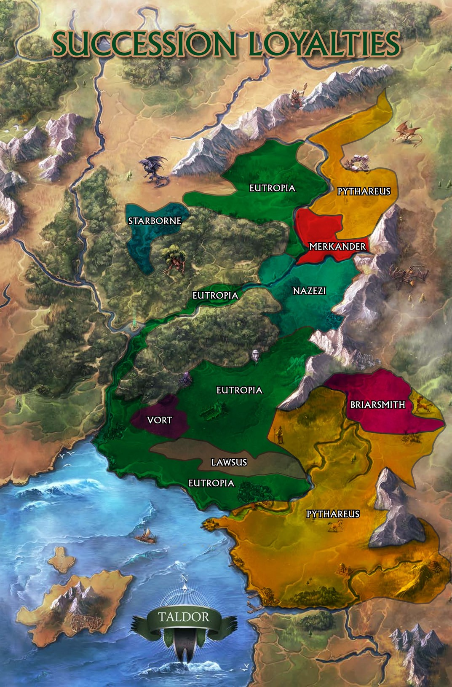
Loyalties Before Assisting Yanmass
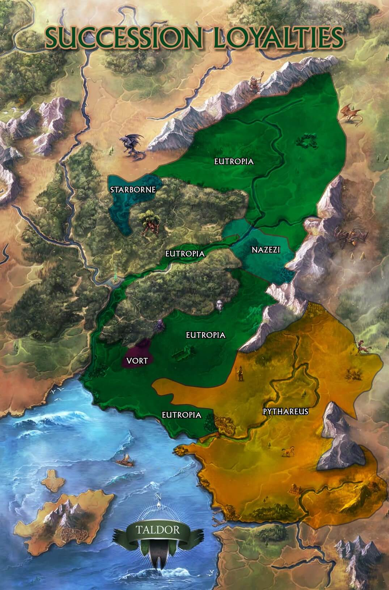
Loyalties Before Entering the City in the Lion's Eye
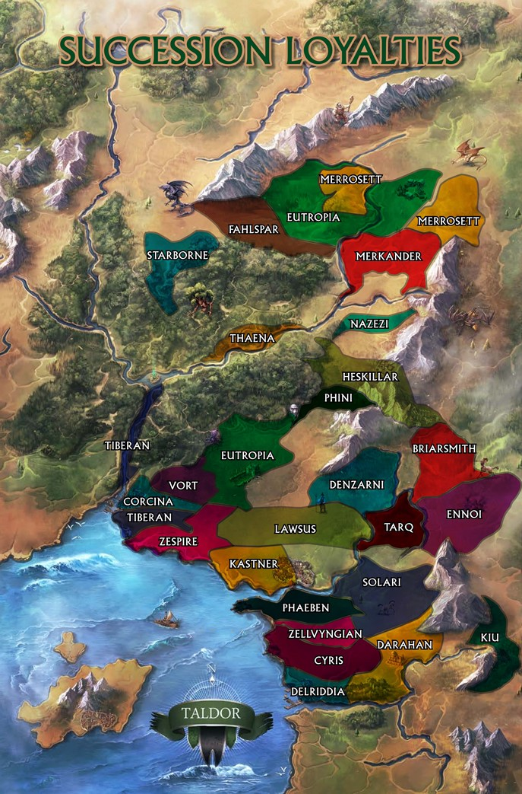
Current Political Loyalties Landscape
Agent-Owned Maps
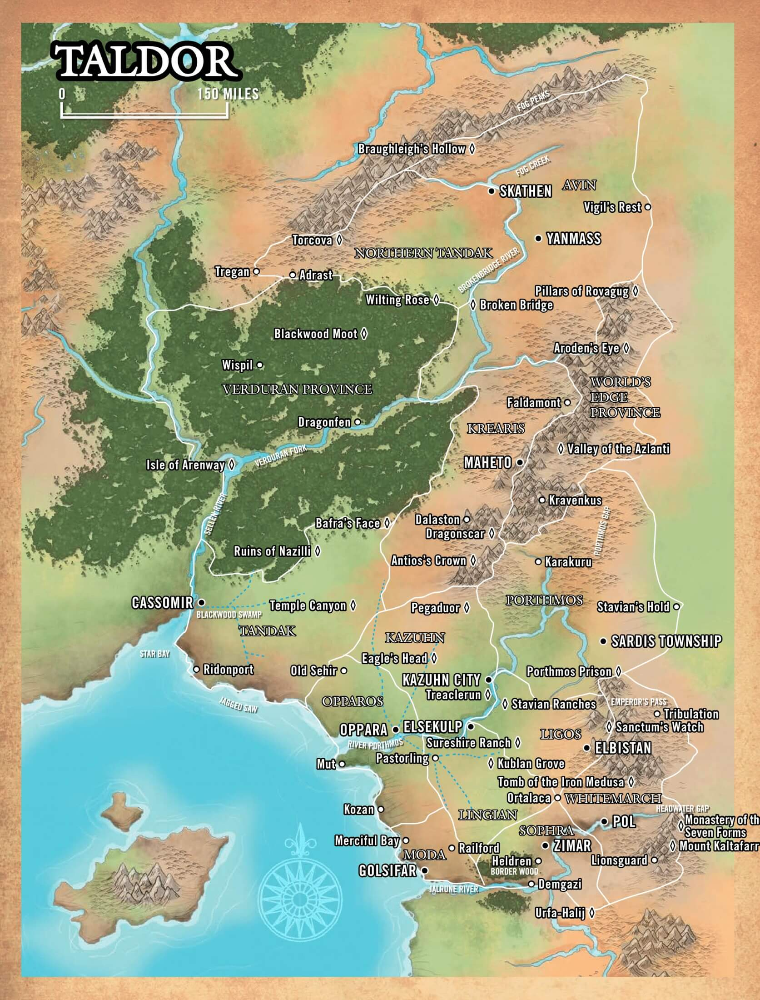
Main Map of TaldorMap of Taldor by Duchy
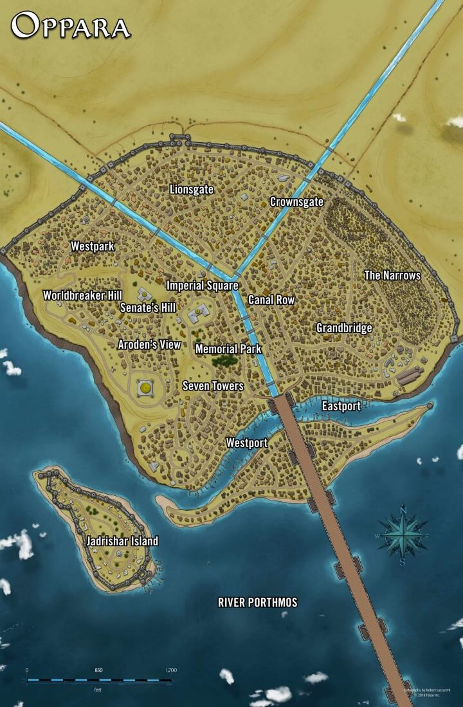
Map of Oppara by DistrictMap of Meratt County
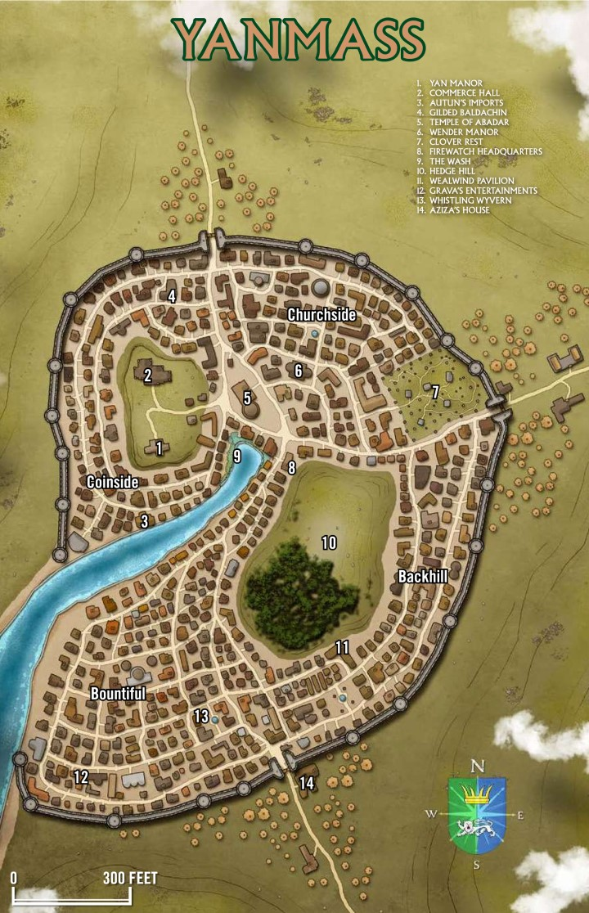
Map of Yanmass by District
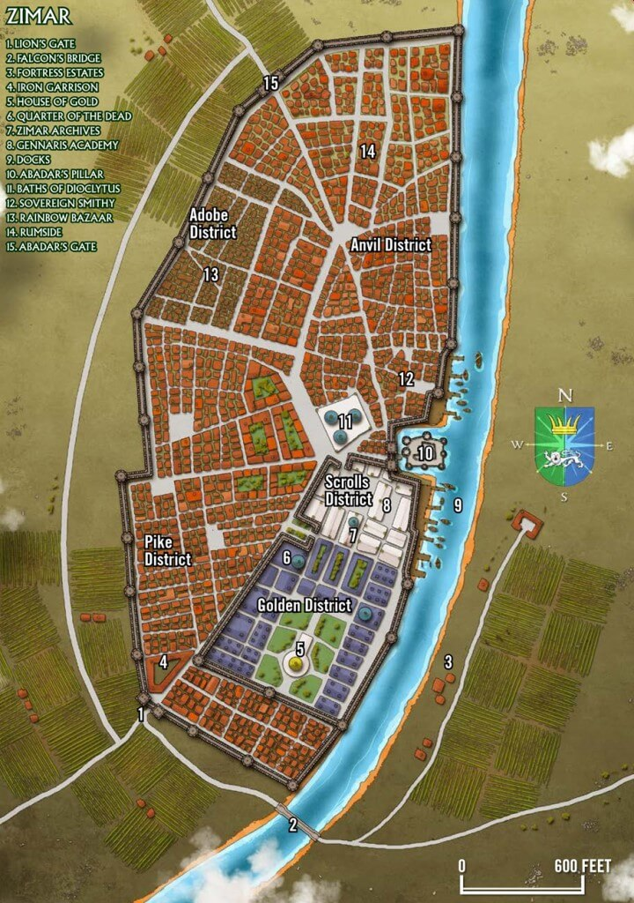
Map of Zimar by District
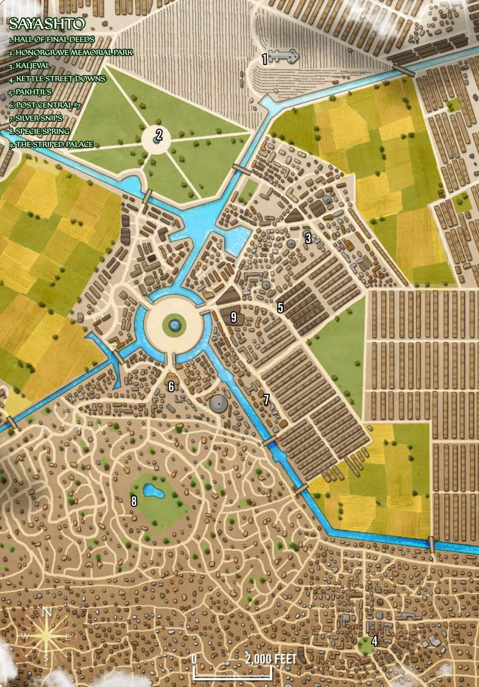
Map of Sayashto, 32nd District of Zdareen, 131st District of Axis's Third Quadrant.
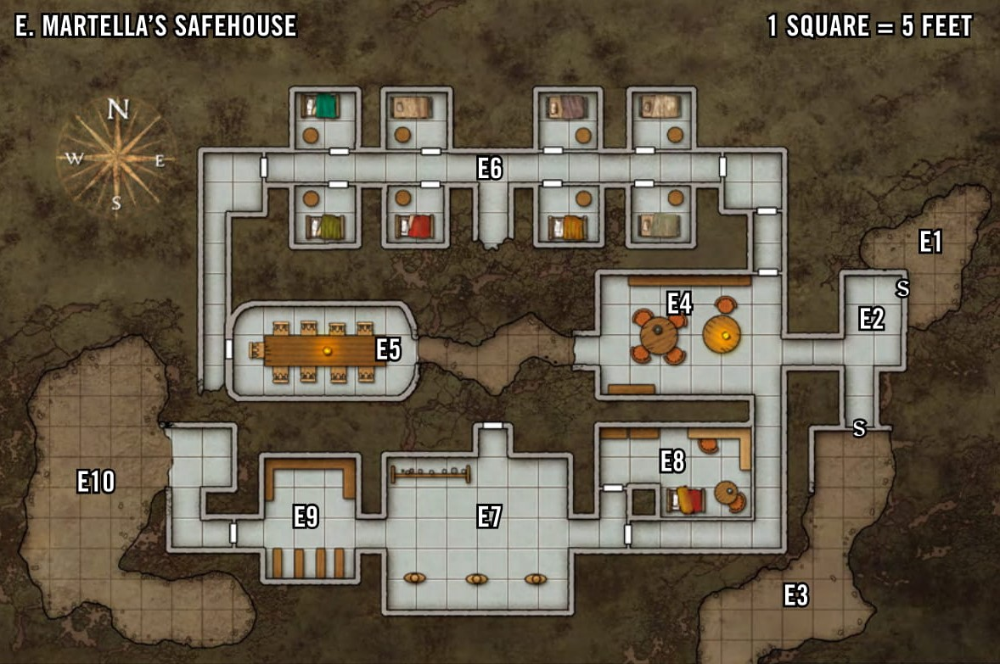
Map of Oppara Safehouse
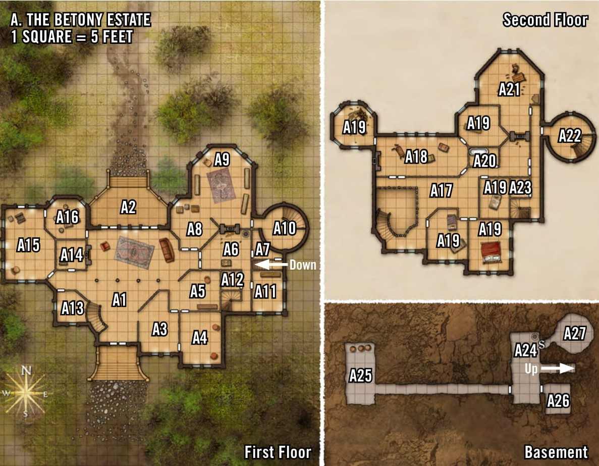
Map of the Betony Estate
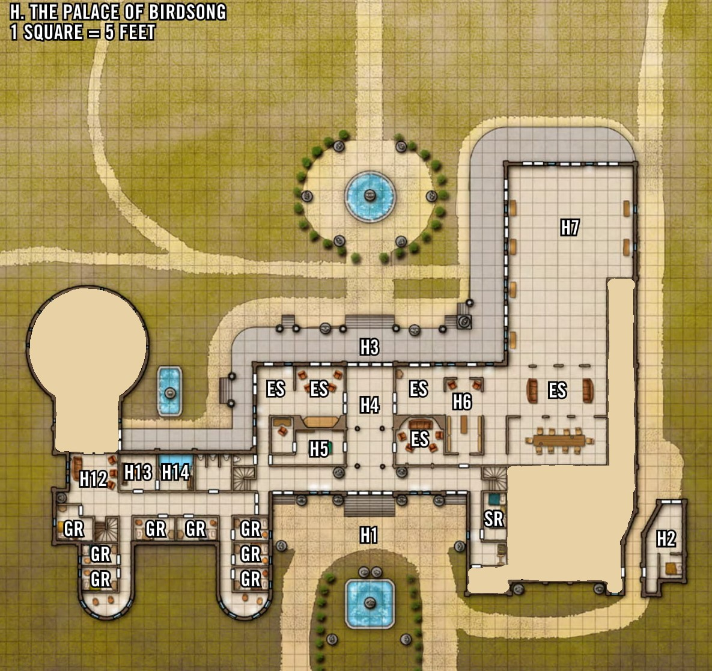
Map of the Palace of Birdsong


{kind=link}
{kind=link}
{kind=link}
{kind=link}
{kind=link}

{kind=link}
{kind=link}
{kind=link}
{kind=link}
{kind=link}
{kind=link}
{kind=link}
{kind=link}